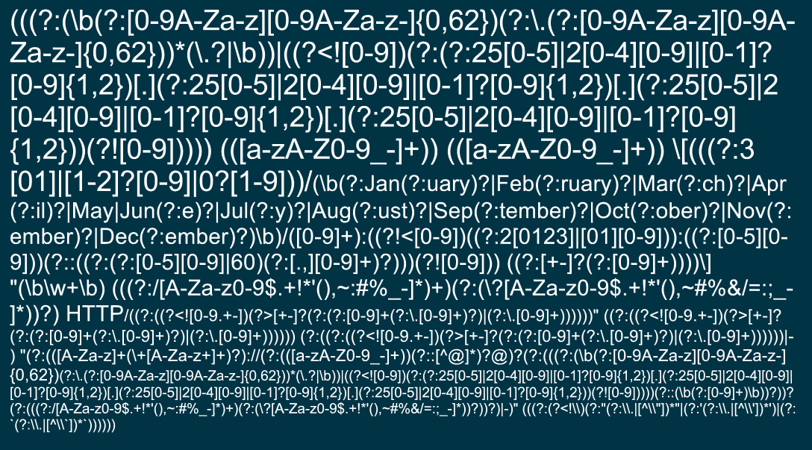
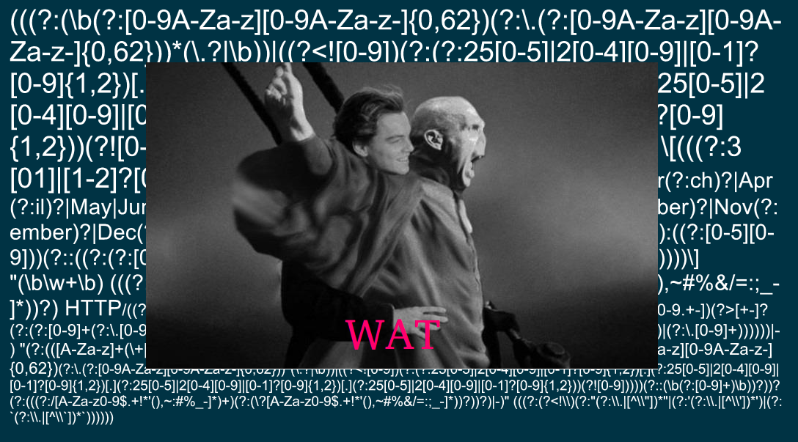

Getting value from your Logs
Made easy [and cheap!] with Logstash
Created by Paul Czarkowski / pczarkowski@ea.com
What is a log?
A human readable, machine parsable representation of an event.
This is a log:
Jan 18 15:15:01 paul-desktop CRON[3068]: (root) CMD
(command -v debian-sa1 > /dev/null && debian-sa1 1 1)
A log is: TIMESTAMP + DATA
Here are some logs
Jan 19 13:01:13 paulcz-laptop anacron[7712]: Normal exit (0 jobs run)
120607 14:07:00 InnoDB: Starting an apply batch of log records to the database...
[1225306053] SERVICE ALERT: FTPSERVER;FTP SERVICE;OK;SOFT;2;FTP OK - 0.029 second response time on port 21 [220 ProFTPD 1.3.1 Server ready.]
[Sat Jan 19 01:04:25 2013] [error] [client 78.30.200.81] File does not exist: /opt/www/vhosts/crappywebsite/html/robots.txt
- Jan 19 13:01:13
- 120607 14:07:00
- 1225306053
- Sat Jan 19 01:04:25 2013
There's an ISO for that!
- 2013-01-19
- 2013-01-19T13:22:11Z
- 2013-01-19T13:22:11.132Z
- 2013-01-19T13:22:11.132345-0500
ISO 8601
What is a log?
A human readable, machine parsable representation of an event.
Logs are Human Readable
208.115.111.74 - - [13/Jan/2013:04:28:55 -0500] "GET /robots.txt HTTP/1.1"
301 303 "-" "Mozilla/5.0 (compatible; Ezooms/1.0; ezooms.bot@gmail.com)"
A human readable, machine parsable representation of an event.

Logs are NOT Human Readable !

Humans can't process walls of text.
Logs are machine parseable
208.115.111.74 - - [13/Jan/2013:04:28:55 -0500] "GET /robots.txt HTTP/1.1"
301 303 "-" "Mozilla/5.0 (compatible; Ezooms/1.0; ezooms.bot@gmail.com)"
A computer can't understand a bunch of arbitrary text.
A human readable, machine parsable representation of an event.
Logs are machine parseable
If there is a way to specify the format

Logs are machine parseable

208.115.111.74 - - [13/Jan/2013:04:28:55 -0500] "GET /robots.txt HTTP/1.1"
301 303 "-" "Mozilla/5.0 (compatible; Ezooms/1.0; ezooms.bot@gmail.com)"
Logs are machine parseable

208.115.111.74 - - [13/Jan/2013:04:28:55 -0500] "GET /robots.txt HTTP/1.1"
301 303 "-" "Mozilla/5.0 (compatible; Ezooms/1.0; ezooms.bot@gmail.com)"
Logs are machine parseable
- Do you or the dude sitting next to you understand it?
- PERL ninja already left.
- Does it work for every possible log line ?
- Who's going to maintain that shit ?
- Is it even useful without being surrounded by code ?
So we agree ... This is Bad.
208.115.111.74 - - [13/Jan/2013:04:28:55 -0500] "GET /robots.txt HTTP/1.1"
301 303 "-" "Mozilla/5.0 (compatible; Ezooms/1.0; ezooms.bot@gmail.com)"
This is better...
{
"client address": "208.115.111.74",
"user": null,
"timestamp": "2013-01-13T04:28:55-0500",
"verb": "GET",
"path": "/robots.txt",
"query": null,
"http version": 1.1,
"response code": 301,
"bytes": 303,
"referrer": null
"user agent": "Mozilla/5.0 (compatible; Ezooms/1.0; ezooms.bot@gmail.com)"
}
logstash...

What is logstash?
- logstash is a tool for managing logs.
- logstash can collect logs, parse logs, store logs.
- logstash is free and Open Source (Apache 2.0).
- logstash is Awesome.
About logstash
At its core, logstash is an event processor.
The lifecycle of an event in logstash can be represented as :
| Input | → | Filter | → | Output |
| # cat /var/log/syslog | | | grep CRON | > | /tmp/cron.txt |
Logstash turns this:
208.115.111.74 - - [13/Jan/2013:04:28:55 -0500] "GET /robots.txt HTTP/1.1"
301 303 "-" "Mozilla/5.0 (compatible; Ezooms/1.0; ezooms.bot@gmail.com)"
into this:
{
"client address": "208.115.111.74",
"user": null,
"timestamp": "2013-01-13T04:28:55-0500",
"verb": "GET",
"path": "/robots.txt",
"query": null,
"http version": 1.1,
"response code": 301,
"bytes": 303,
"referrer": null
"user agent": "Mozilla/5.0 (compatible; Ezooms/1.0; ezooms.bot@gmail.com)"
}
Logstash Plugins
- Plugins are the pixie dust that makes logstash awesome.
- Plugins are chained together to tell logstash where to find logs and what to do with them.
There are three types of plugins...

Logstash Plugins - Input
~ 25 input plugins ship with logstash.
Collect logs and turn them into an event object
Logstash Plugins - Filter
~ 20 filter plugins ship with logstash.
Modify the event object to make it more useful
Logstash Plugins - Output
~ 40 output plugins ship with logstash.
Ship the event object to a better place.
Two Very Important Filters
Let's talk briefly about two filters that are
very important to making our logs useful
Filter - Date
takes a timestamp and makes it ISO 8601 Compliant
Turns this:
13/Jan/2013:04:28:55 -0500Into this:
2013-01-13T04:28:55-0500Filter - grok
Grok parses arbitrary text and structures it.
Makes complex regex patterns simple.
USERNAME [a-zA-Z0-9_-]+
USER %{USERNAME}
INT (?:[+-]?(?:[0-9]+))
MONTH \b(?:Jan(?:uary)?|Feb(?:ruary)?|Mar(?:ch)?|Apr(?:il)?|May|Jun(?:e)?|Jul(?:y)?|Aug(?:ust)?|Sep(?:tember)?|Oct(?:ober)?|Nov(?:ember)?|Dec(?:ember)?)\b
DAY (?:Mon(?:day)?|Tue(?:sday)?|Wed(?:nesday)?|Thu(?:rsday)?|Fri(?:day)?|Sat(?:urday)?|Sun(?:day)?)
COMBINEDAPACHELOG %{IPORHOST:clientip} %{USER:ident} %{USER:auth}
\[%{HTTPDATE:timestamp}\] "(?:%{WORD:verb} %{NOTSPACE:request}
(?: HTTP/%{NUMBER:httpversion})?|-)" %{NUMBER:response}
(?:%{NUMBER:bytes}|-) %{QS:referrer} %{QS:agent}
Two [more] Very Important Filters
- Input - Snmptrap
- Filter - Translate
I wrote them. I am not a programmer. Logstash is Easy, Modular, Newbie Friendly.
Can do powerful things with [ boilerplate + ] a few lines of code
Logstash - User Stories
- As a Systems Administrator, I need to know that apache is behaving.
- As a Network Engineer, I need to to know when a switch throws an error.
- As a Security Goon, I need to know when unauthorized login attempts are made.
Logstash - User Stories
- As a Systems Administrator, I need to know that apache is behaving.
- As a Network Engineer, I need to to know when a switch throws an error.
- As a Security Goon, I need to know when unauthorized login attempts are made.
User Story - SysAdmin
Remember our apache log from earlier?
User Story - SysAdmin
Define Inputs and Filters.
input {
file {
type => "apache"
path => ["/var/log/httpd/httpd.log"]
}
}
filter {
grok {
type => "apache"
pattern => "%{COMBINEDAPACHELOG}"
}
date {
type => "apache"
}
geoip {
type => "apache"
}
}
User Story - SysAdmin
Define some outputs.
output {
statsd {
type => "apache"
# Count one hit every event by response
increment => "apache.response.%{response}"
}
elasticsearch {
type => "apache"
}
}
User Story - SysAdmin
Instant Gratification !

User Story - SysAdmin
Kibana
User Story - SysAdmin
Kibana
Logstash - User Stories
- As a Systems Administrator, I need to know that apache is behaving.
- As a Network Engineer, I need to to know when a switch throws an error.
- As a Security Goon, I need to know when unauthorized login attempts are made.
User Story - Network Engineer
CONTENT GOES HEER!
Logstash - User Stories
- As a Systems Administrator, I need to know that apache is behaving.
- As a Network Engineer, I need to to know when a switch throws an error.
- As a Security Goon, I need to know when unauthorized login attempts are made.
User Story - Security Goon
CONTENT GOES HEER!
Bonus User Story
Social Media Analysis!
Logstash - Twitter Input
input {
twitter {
type => "twitter"
keywords => ["bieber","beiber"]
user => "username"
password => "*******"
}
}
Scaling logstash

Further Reading
- http://www.logstash.net/
- http://cookbook.logstash.net/
- https://github.com/KrisBuytaert/vagrant-puppet-logstash
- http://jujucharms.com/charms/precise/logstash-indexer
Questions ?
Paul Czarkowski / pczarkowski@ea.com